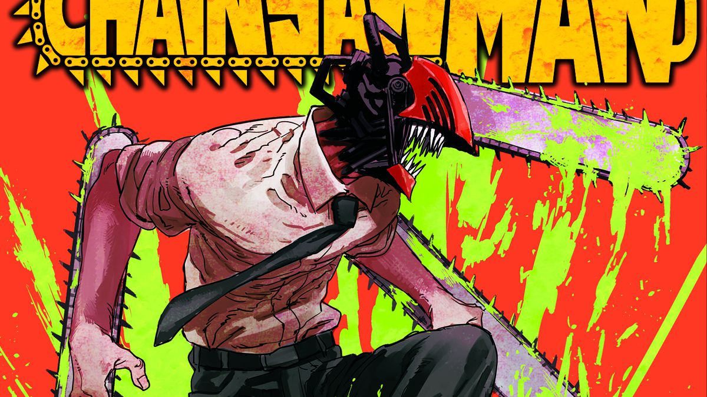
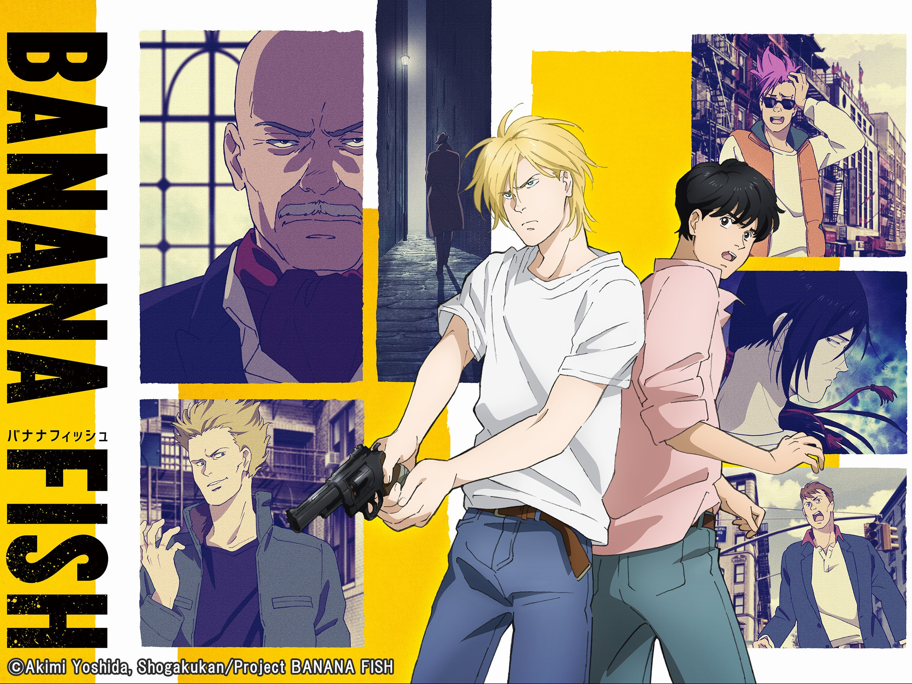
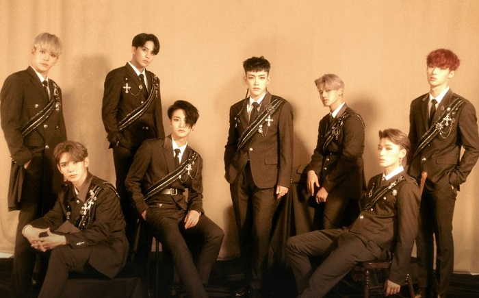

Chainsaw Man is a manga series by Tatsuki Fujimoto. Denji, a teenager living an impoverished life, is killed by debt-collectors, but a contract with his pet devil Pochita brings him back as Chainsaw Man.

Set in New York City in the 1980s, Banana Fish follows Ash Lynx, a 17-year old gang leader, who begins to uncover the mystery behind a mysterious substance known only as 'Banana Fish'.

Some of my favourite bands include:
Felix is Korean idol and a member of Stray Kids, and is most well-known for his deep rapping voice. Personally, my favourite Stray Kids MV overall is Thunderous.